André Larsson
Byggprojektör, Kontrollansvarig - behörighet K enl. PBL
0920-20 31 87andre.larsson@starkarkitekter.seArkitekter och byggnadsingenjörer med ett gemensamt intresse: att göra en plats bättre genom genomtänkt arkitektur.
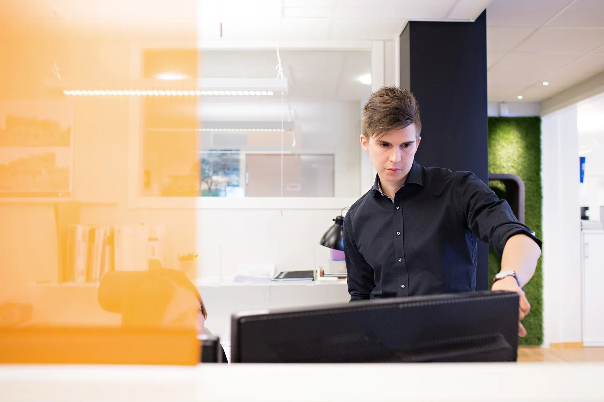
Kontoret grundades 1997 som Tirsén & Aili Arkitekter. Sedan 2020 heter vi Stark Arkitekter.
I dag möts omkring tjugo arkitekter och byggnadsingenjörer i organisationen. Lång erfarenhet får sällskap av nya kompetenser och perspektiv.
Vi arbetar med såväl övergripande stadsbyggnad som detaljer i enskilda byggnader. Uppdragen spänner från bostäder och skolor till kontor, kultur och industri.
Hitta rätt kollega eller kontakta oss på info@starkarkitekter.se.
Byggprojektör, Kontrollansvarig - behörighet K enl. PBL
0920-20 31 87andre.larsson@starkarkitekter.seArkitekt
0910-29 18 31anette.signarsson@starkarkitekter.se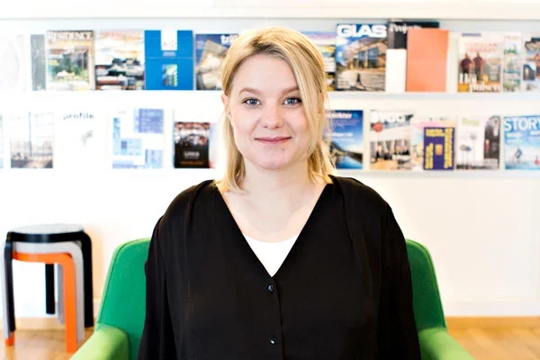
Ansvarig Arkitekt MSA
0920-20 31 69anna.klockare-hagnelov@starkarkitekter.se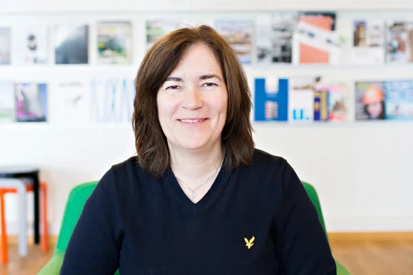
Byggnadsingenjör / Projekteringsledare
0920-20 31 80anna.lundstrom@starkarkitekter.seArkitekt MSA
0920-20 31 67beatrice.sterner@starkarkitekter.se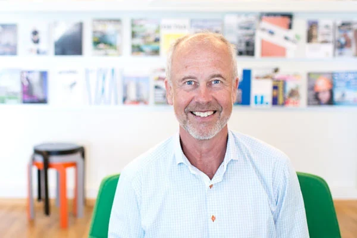
Ansvarig Arkitekt SAR/MSA
070-697 31 62bengt.aili@starkarkitekter.seArkitekt MSA
0910-29 18 33cecilia.johansson@starkarkitekter.se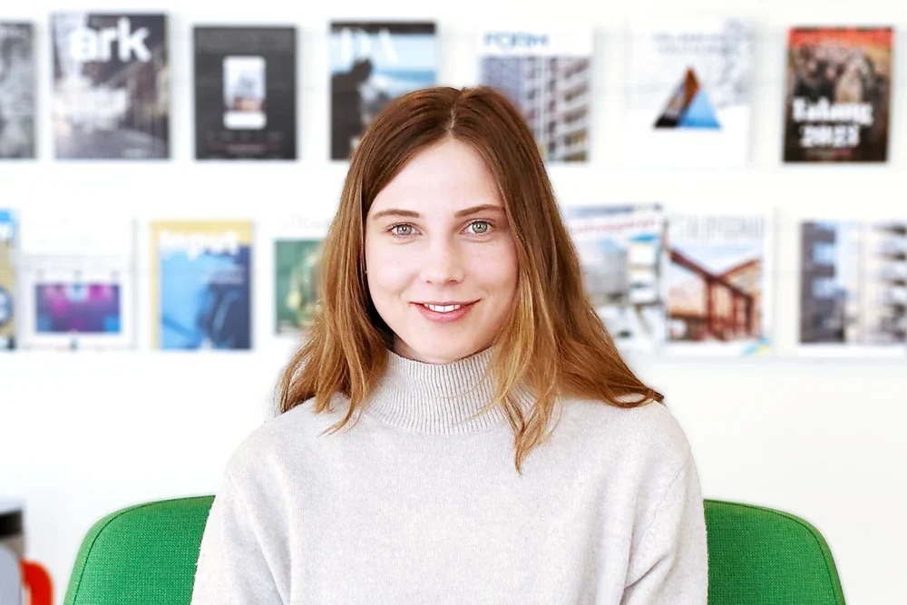
Civilingenjör – arkitektur
0920-20 31 86clara.jonsson-edfast@starkarkitekter.se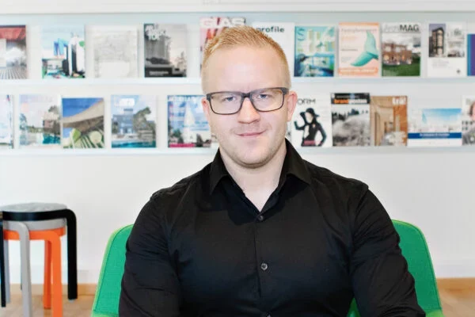
COO, Byggnadsingenjör SBR, Kontrollansvarig enl. PBL, Projekteringsledare
0920-20 31 93dennis.larsson@starkarkitekter.se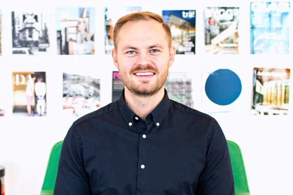
Arkitekt / Civilingenjör
0920-20 31 81frank.edstrom@starkarkitekter.se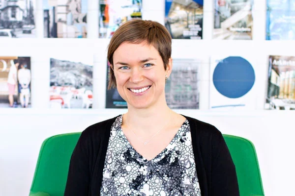
Byggnadsingenjör
0920-20 31 91iva.hedlund@starkarkitekter.se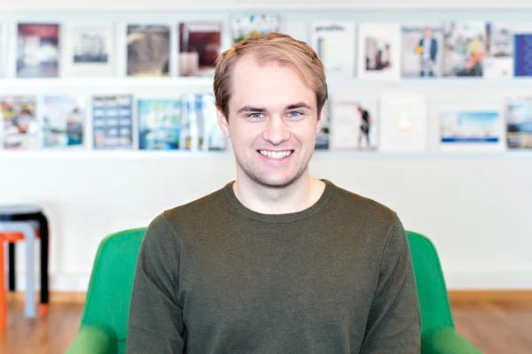
Civilingenjör – arkitektur / Visualiserare
0920-20 31 82jesper.johansson@starkarkitekter.seArkitekt
0910-29 18 32jonas.lindvall@starkarkitekter.se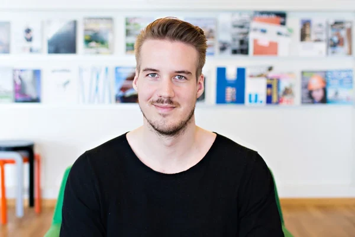
Arkitekt / civilingenjör
08-503 593 06jonas.nyman@starkarkitekter.se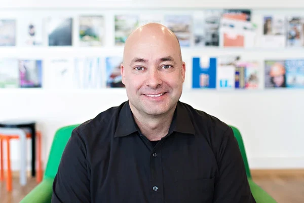
Byggnadsingenjör SBR, Projekteringsledare, Kontrollansvarig enl. PBL
070-666 31 65lars.wredendal@starkarkitekter.se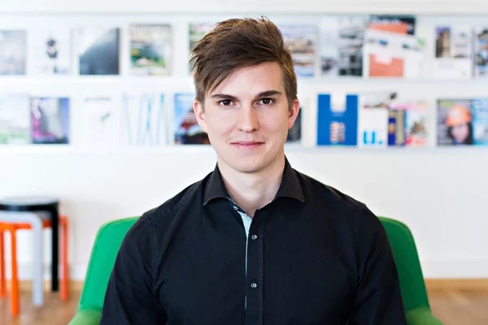
CEO, Arkitekt MSA/Civilingenjör, Certifierad Sakkunnig Tillgänglighet (TIL2)
0920-20 31 68petter.larsson@starkarkitekter.seArkitekt SAR/MSA
08-503 593 07pierre.maccario@starkarkitekter.se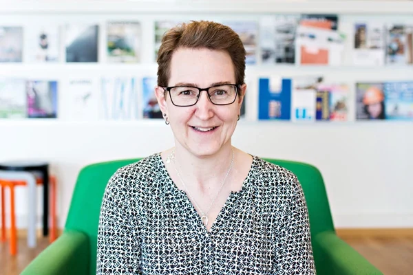
Ekonomi/administration
0920-20 31 88susanne.lundin@starkarkitekter.se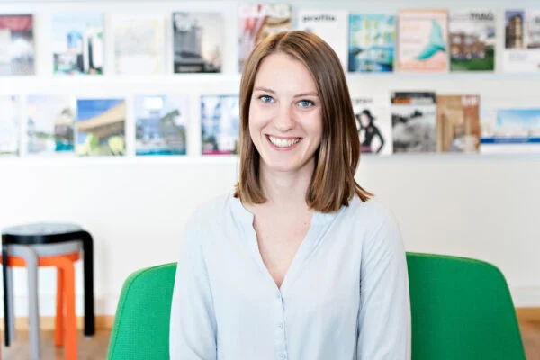
Civilingenjör – arkitektur
0920-20 31 84wilma.edfast@starkarkitekter.seTirsén & Aili Arkitekter grundas. Kontoret bygger vidare genom människor med olika erfarenheter och kompetenser.
Stark Arkitekter blir det nya namnet, med samma strävan att hålla samman hela processen.
Vi finns i Luleå, Skellefteå och Stockholm och samarbetar med ett nätverk av kompetenser lokalt och nationellt.
Med rötterna i Luleå och kollegor i Skellefteå och Stockholm.